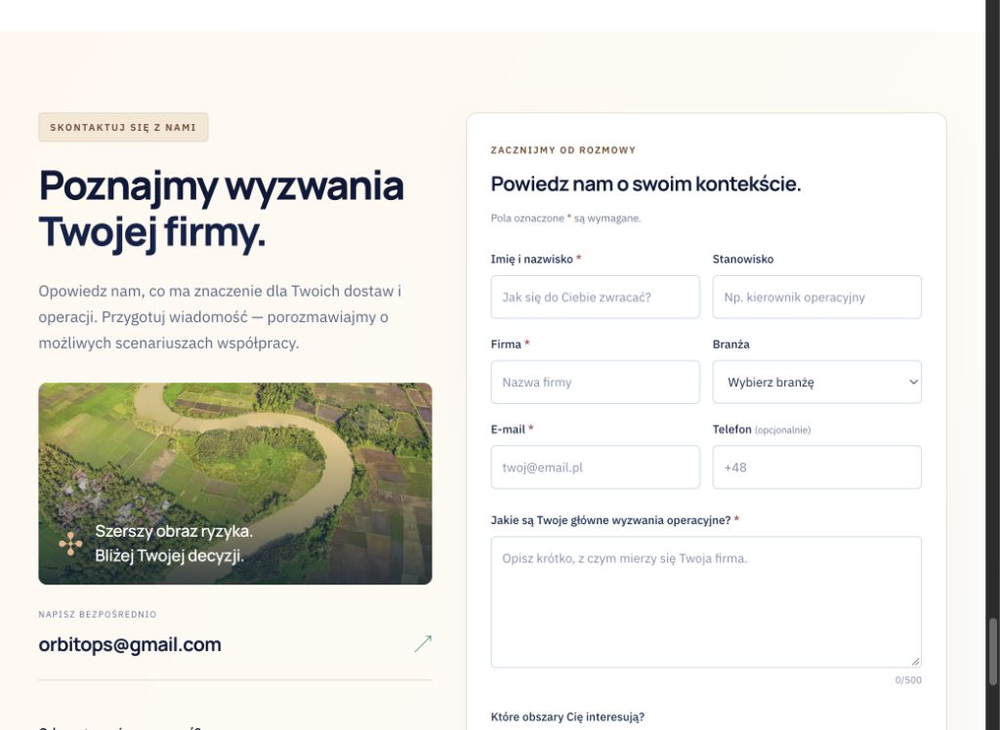
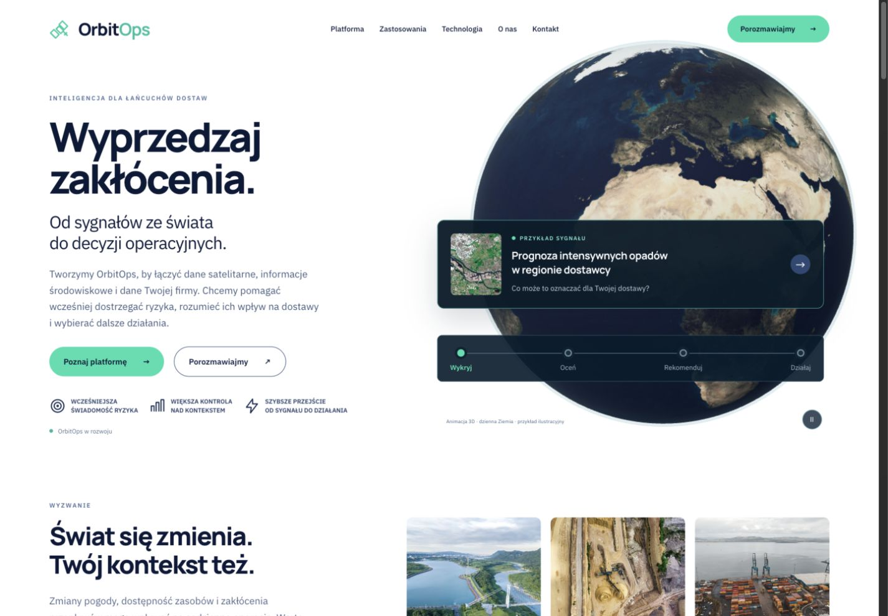
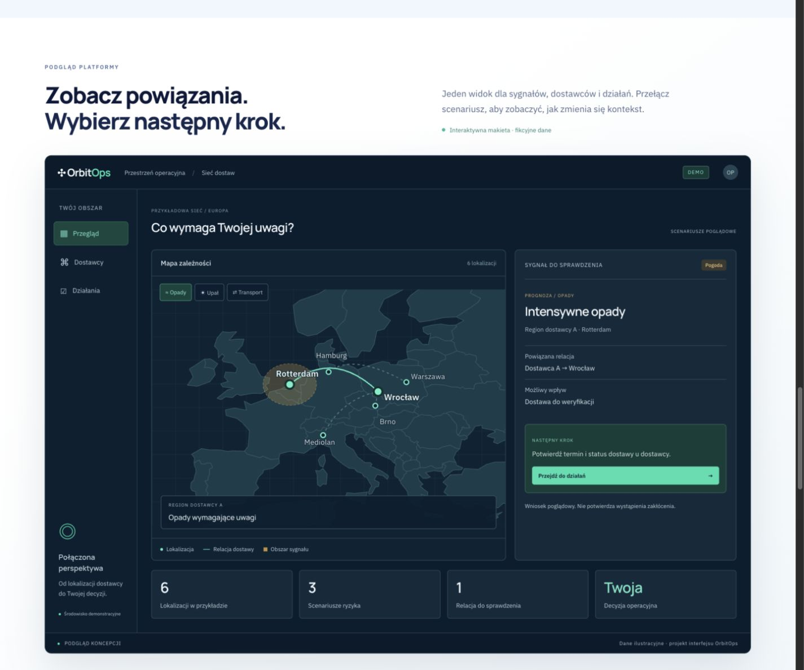
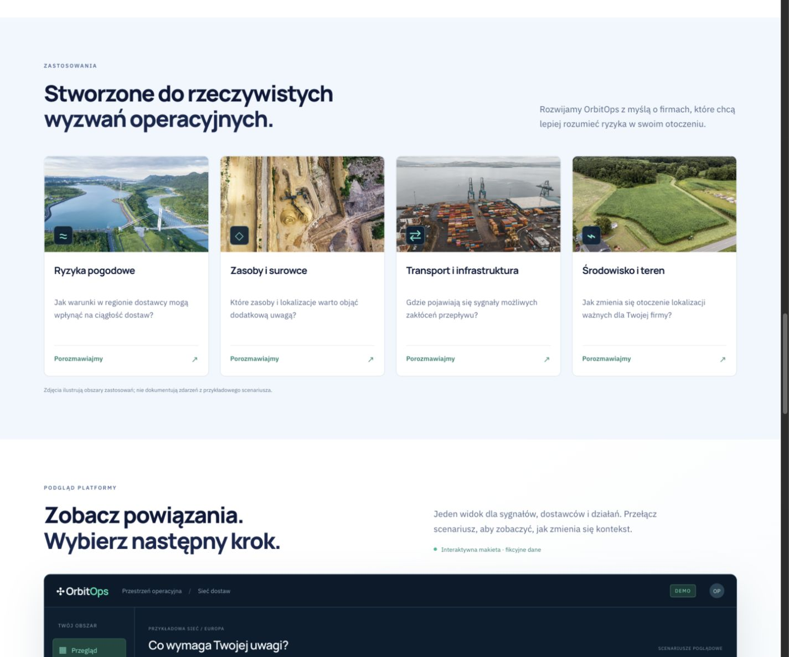
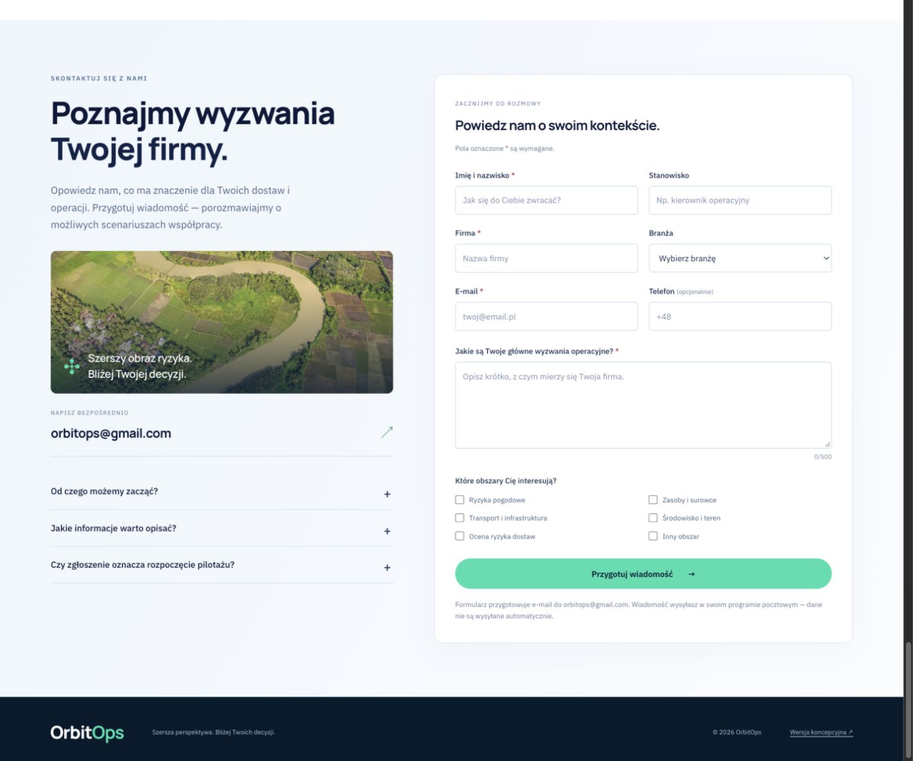
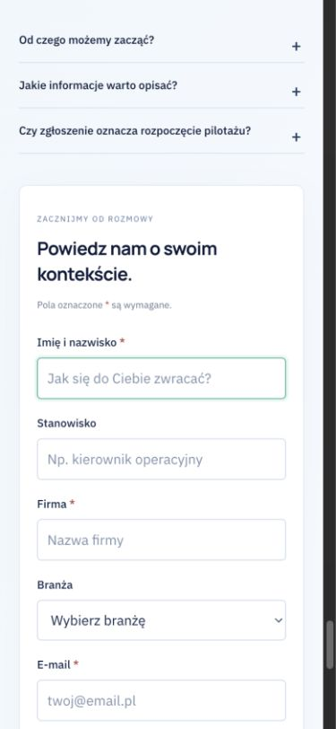

OrbitOps — grafiki, platforma i kontakt
Otwórz działający prototyp →
Ocena krytyka wizualnego Sol 6.1: 8,4/10.
Recenzja renderów bez kodu. Płynność ruchu nieoceniona przez krytyka. Pełna recenzja ↗
Ciepłe akcenty — aktualny wygląd

Dzienna Ziemia z pełnym obrysem

Autorski podgląd platformy
Otwórz interaktywną makietę →

Więcej zdjęć i grafiki

Formularz kontaktowy

Formularz przygotowuje wiadomość do wysłania w programie pocztowym. Nie wysyła jej automatycznie.
Telefon

Rzeczywista animacja WebGL